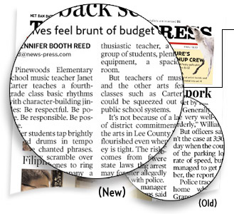

 |
THE NEWS-PRESS REDESIGN 2004 Body text: The type used for stories is now slightly larger. More noticeable is that it is bolder. We've also increased the white space between lines of type because that makes reading much easier. New body type: Poynter Old Style Text 3 (weight), 9.5 pts; 10.25 pt leading; -4.5 tracking; locked to a 10.25 pt baseline grid. Old body type: Poynter Old Style Text 1 (weight), 9.4 pts; 9.7 pt leading; -6 tracking. | |||
| [ BACK | NEXT ] For full size pages: [ DOWNLOAD PDFs ] | ||||